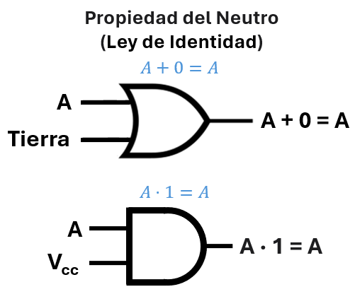
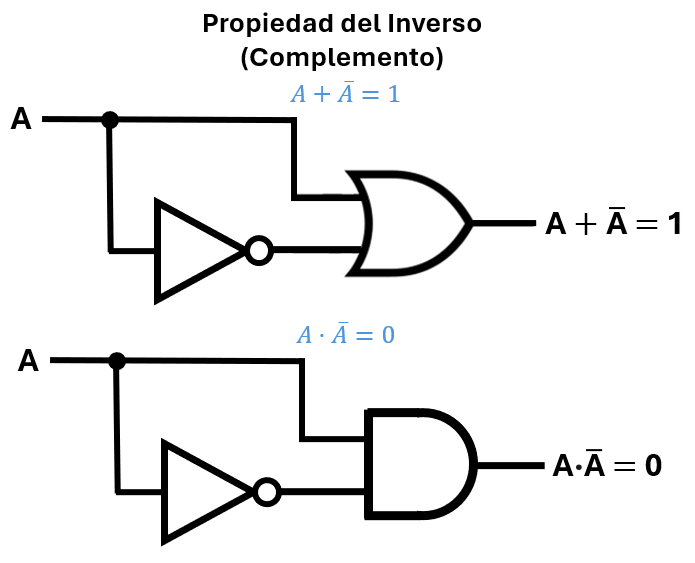
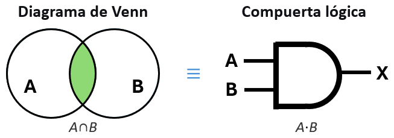
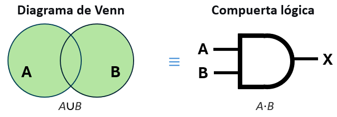
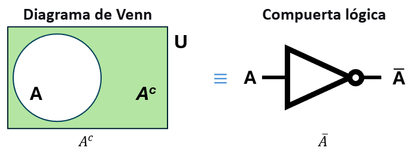
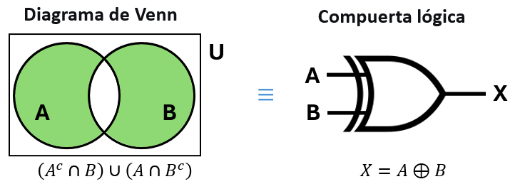
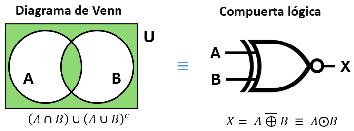
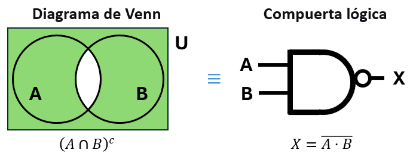
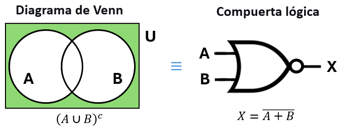

Unidad 3: Fundamentos de Cómputo - Lección 21
🗿 La Piedra Rosetta: Isomorfismo
¡Bienvenido a la Unidad 3: Fundamentos de Cómputo!
Al final del último laboratorio (Lección 20) te revelamos un secreto que separa a los técnicos de los verdaderos arquitectos de hardware: el circuito físico que armaste para encender la luz de una escalera resultó ser, asombrosamente, el motor matemático exacto para sumar dos números binarios.
¿Cómo es posible que un interruptor de luz y una suma matemática sean la misma cosa?
Hoy descubriremos el principio más profundo de la computación: la Electrónica, la Lógica Filosófica y las Matemáticas de Conjuntos son, en realidad, trillizas separadas al nacer. A este fenómeno lo llamamos Isomorfismo. A partir de hoy, dejarás de ver simples "cables con corriente" y comenzarás a ver el flujo puro del pensamiento humano materializado en silicio.
📐 ¿Qué es el álgebra de Boole?
Es un sistema matemático formado por un conjunto \(B\) con solo dos elementos: \(\{0, 1\}\) (que representan Falso/Verdadero, Apagado/Encendido), junto con dos operaciones binarias llamadas adición (\(+\)) y producto (\(\cdot\)).
Aunque usamos los mismos símbolos que en la aritmética, las reglas son diferentes porque el conjunto es limitado. Veamos cómo cambia la matemática cuando le quitamos todos los números excepto el cero y el uno.
🧮 Tablas de la adición y el producto en Aritmética (\(\mathbb{N}\))
En la escuela aprendiste tablas como estas. Observa que el resultado puede ser cualquier número natural al infinito.
| + | 0 | 1 | 2 | 3 | … |
|---|---|---|---|---|---|
| 0 | 0 | 1 | 2 | 3 | … |
| 1 | 1 | 2 | 3 | 4 | … |
| 2 | 2 | 3 | 4 | 5 | … |
| … | … | ||||
| · | 0 | 1 | 2 | 3 | … |
|---|---|---|---|---|---|
| 0 | 0 | 0 | 0 | 0 | … |
| 1 | 0 | 1 | 2 | 3 | … |
| 2 | 0 | 2 | 4 | 6 | … |
| … | … | ||||
🔢 Tablas del álgebra de Boole (Conjunto \(B = \{0,1\}\))
Ahora reducimos el universo a solo dos elementos. Las tablas cambian drásticamente:
| + | 0 | 1 |
|---|---|---|
| 0 | 0 | 1 |
| 1 | 1 | 1 |
| · | 0 | 1 |
|---|---|---|
| 0 | 0 | 0 |
| 1 | 0 | 1 |
⚠️ ¡El Choque Mental del Ingeniero!
Compara las tablas:
✅ En ambas, \(0 \cdot 0 = 0\) y \(1 \cdot 1 = 1\).
❌ Pero en aritmética \(1+1 = 2\), mientras que en Boole \(1+1 = 1\).
¿Por qué? Porque en Boole no existe el número 2 ni la "cantidad". Todo es un estado. Si tienes una cubeta llena de agua (1) y le viertes otra cubeta llena (1), el resultado es simplemente... ¡Lleno (1)!
🍎 Rincón del Docente: Cómo defender la "Herejía" del 1+1=1
Cuando escribas \(1+1=1\) en la pizarra de un colegio de secundaria, prepárate para los gritos de protesta. Tus alumnos llevan 10 años condicionados a contar manzanas. Tu misión es enseñarles a dejar de contar y empezar a describir estados.
La Analogía de la Luz y la Ventana
Para romper el paradigma aritmético, no uses números. Usa el sol y un cuarto oscuro.
- Caso Base (0+0): Pregunta: "Si mi linterna está apagada (0) y la persiana está cerrada (0), ¿hay luz en el cuarto?". Responderán: "No (0)".
- Caso 1 (1+0): "Si enciendo mi linterna (1) pero la persiana sigue cerrada (0), ¿hay luz?". Responderán: "Sí (1)".
- El Choque (1+1): "Si enciendo mi linterna (1) Y ADEMÁS abro la persiana para que entre el sol (1)... ¿hay doble luz? ¿Se inventó un nuevo tipo de luz llamada 'Luz Nivel 2'?". Deja que razonen. "¡No! Simplemente el cuarto sigue estando ILUMINADO (1)".
La lección vital para el maestro: La suma lógica (OR) no acumula cosas en un saco; evalúa si una condición se cumplió. Si la condición "Hay Luz" ya es verdadera, agregar más fuentes de luz no la hace "más verdadera". Es 1 o es 0.
📐 Las 5 Propiedades Fundamentales
Estas cinco propiedades son las columnas vertebrales de todo el universo digital. Son exactamente idénticas tanto para compuertas físicas como para teoría de conjuntos.
P1. Conmutativa (El orden no importa)

Fig. 1: Cambiar el orden de los cables de entrada no modifica la salida de la compuerta.
Conjuntos: \(A \cup B = B \cup A\) y \(A \cap B = B \cap A\).
P2. Asociativa (Agrupar da igual)

Fig. 2: Agrupar en cascada de diferente manera no cambia la salida final.
Conjuntos: \(A \cup (B \cup C) = (A \cup B) \cup C\) y \(A \cap (B \cap C) = (A \cap B) \cap C\).
P3. Propiedad de Identidad (Elemento Neutro)

Fig. 3: El 0 no afecta a la OR; el 1 no afecta a la AND.
Boole: \(A + 0 = A\) y \(A \cdot 1 = A\).
Conjuntos: \(A \cup \emptyset = A\) y \(A \cap U = A\) (donde \(U\) es el Universo).
P4. Complemento (Inversos)

Fig. 4: Una señal SUMADA con su propia negación da siempre 1. MULTIPLICADA da siempre 0.
Conjuntos: \(A \cup A^c = U\) y \(A \cap A^c = \emptyset\).
P5. Distributiva (El gran truco)

Fig. 5: AND se distribuye sobre OR, y OR se distribuye sobre AND.
🤯 ¡Atención! ¡Esto rompe la matemática normal!
En Boole, la suma se distribuye sobre el producto: \(A + (B \cdot C) = (A + B) \cdot (A + C)\).
Si intentas esto con números normales (\(2 + (3 \times 4)\)), ¡el resultado es totalmente falso! Es una regla exclusiva y mágica de la lógica binaria.
🧩 La Piedra Rosetta: El Diccionario de Isomorfismo
Cualquier sistema que cumpla las 5 reglas anteriores es un "Álgebra de Boole". Míralo tú mismo: la misma estructura vive bajo tres disfraces diferentes.
| Propiedad | Lógica / Boole | Conjuntos | Circuitos (Hardware) |
|---|---|---|---|
| Operaciones | AND (\(\cdot\)) OR (\(+\)) NOT (\(\overline{A}\)) |
Intersección (\(\cap\)) Unión (\(\cup\)) Complemento (\(A^c\)) |
Compuerta 7408 Compuerta 7432 Compuerta 7404 |
| Límites | Verdadero (1) Falso (0) |
Universo (\(U\)) Vacío (\(\emptyset\)) |
Vcc (5V) GND (0V) |
| Conmutativa | \(A+B = B+A\) | \(A\cup B = B\cup A\) | Pines de entrada intercambiables |
| Identidad | \(A \cdot 1 = A\) | \(A\cap U = A\) | AND conectada a Vcc pasa la señal igual |
⚠️ Nota Técnica: El "0" no está muerto
En la tabla anterior, igualamos el Falso (0) con el Conjunto Vacío (\(\emptyset\)) y con GND (0V). Esto es perfecto a nivel lógico, pero ¡cuidado con la física!
En electrónica, que un pin esté en 0V (GND) no significa que no tenga energía o que esté desconectado. De hecho, un pin en 0 lógico tiene la "fuerza" para absorber corriente de otros componentes (como cuando enciendes un LED conectándolo a GND). El 0 es un estado eléctrico activo y poderoso, tan real como el 5V. ¡Nunca confundas el "Cero Matemático" con un cable roto!
Analogía cotidiana: Un plano dibujado en papel y la casa construida en cemento son isomorfos. El plano no es la casa, pero sus relaciones y distancias son exactamente las mismas. Si entiendes el plano, entiendes la casa.
💰 ¿Por qué nos importan las Propiedades? (El Dinero)
Es normal pensar que estas cinco reglas son solo teoría aburrida de matemáticas. Pero en la ingeniería de hardware, el álgebra es literalmente dinero. Observa de nuevo la Propiedad Distributiva:
Matemáticamente, el lado izquierdo y el lado derecho dan el mismo resultado (son lógicamente equivalentes). Pero físicamente, NO son iguales:
Lado Izquierdo: \(A \cdot (B + C)\)
- 1 compuerta OR (para \(B+C\)).
- 1 compuerta AND (para multiplicar por \(A\)).
- Total: 2 compuertas.
Lado Derecho: \((A \cdot B) + (A \cdot C)\)
- 2 compuertas AND (una para \(A \cdot B\), otra para \(A \cdot C\)).
- 1 compuerta OR (para sumarlas).
- Total: 3 compuertas.
La conclusión del Ingeniero: Conocer las propiedades del álgebra de Boole te permite transformar una ecuación costosa (derecha) en su versión más barata y eficiente (izquierda). Saber factorizar y distribuir te permite elegir la versión que requiera comprar menos chips, soldar menos cables y consumir menos energía de la batería. ¡El álgebra diseña; la economía decide!
2. Venn vs. Compuertas 🔴🔵
¿Recuerdas los diagramas de bolas del colegio? ¡Eran compuertas lógicas disfrazadas!
El Club Exclusivo (AND / ∩)

La zona sombreada es minúscula. Es muy restrictiva. Solo entran los elementos que son VIP en AMBOS lados al mismo tiempo.
La Fiesta de Todos (OR / ∪)

La zona sombreada es enorme. Es permisiva. Entran los de A, los de B, o los que están en ambos. Con uno basta.
El Mundo del Revés (NOT / ^c)

Es todo lo que está AFUERA del círculo, pero dentro del Universo. Te expulsa de adentro hacia afuera.
🍎 Rincón del Docente: Los "Círculos Vivos" de Venn
La magia del Isomorfismo es que puedes enseñar compuertas lógicas complejas sin tocar un solo cable. Convierte el piso de tu salón en un diagrama de Venn gigante usando dos aros de hula-hula o dibujando dos grandes círculos intersecados con tiza o cinta adhesiva.
Juego de Rol: "El Detector de Etiquetas"
Divide la clase y asígnales propiedades físicas visibles.
- El Escenario: El Círculo Izquierdo (A) es para "Alumnos con gafas". El Círculo Derecho (B) es para "Alumnos con tenis blancos".
- La Compuerta AND (\(\cap\)): Grita: "¡Activen el circuito AND!". La clase debe descubrir que SÓLO los alumnos que tienen gafas Y tenis blancos a la vez pueden pararse en el minúsculo centro (la intersección). Son el "Club Exclusivo".
- La Compuerta OR (\(\cup\)): Grita: "¡Activen el circuito OR!". Ahora, cualquier alumno que cumpla al menos UNA condición corre a meterse en cualquier parte de los círculos. El área se llena (La "Fiesta de Todos").
- La Compuerta NOT (\(^c\)): Grita: "¡El Complemento de A!". Todo el que NO tenga gafas debe salir del círculo A y pararse en los bordes del salón (El Universo).
El anclaje conceptual: Cuando vuelvan a sus asientos y les muestres el chip 7408 (AND), recuérdales lo apretados que estaban en el centro del aro. Ya no verán una tabla de verdad abstracta de ceros y unos; recordarán físicamente lo estricta que es la multiplicación lógica.
Las Compuertas de Decisión Compleja (XOR y XNOR)
A diferencia de AND y OR, las compuertas XOR y XNOR no son funciones básicas, sino compuestas. Son las verdaderas "Fuerzas Especiales" porque toman decisiones basadas en la comparación. Geométricamente, sus diagramas de Venn son fascinantes.
El Dilema Estricto (XOR / Disyunción Exclusiva)
La XOR es la compuerta de la diferencia: "O tú o yo, pero NUNCA los dos".

Fig. 9: La XOR (\(A \oplus B\)) selecciona todo lo que pertenece a A y a B, excluyendo su intersección.
Mira el diagrama de Venn: es como una rosquilla a la que le falta el centro. La zona verde abarca los elementos que son exclusivos de A y exclusivos de B.
- En Lógica / Conjuntos: Se define como \((A^c \cap B) \cup (A \cap B^c)\). Traducido: "Lo que está en B pero no en A, UNIDO a lo que está en A pero no en B".
- En Circuitos: \(X = \bar{A}B + A\bar{B}\). ¿Te resulta familiar? Es exactamente la ecuación matemática que armaste con 4 compuertas NAND en la Lección 20.
- Su gran secreto: La geometría de este diagrama de Venn es la base visual de la Suma Binaria. Este "hueco" en el medio es lo que nos obliga a "llevar una" (acarreo) cuando sumamos \(1+1\).
El Juez de Igualdad (XNOR / Equivalencia o Coincidencia)
La XNOR es la negación de la XOR. Actúa como un detector de almas gemelas: la salida es 1 solo si ambas entradas son idénticas (ambas 0 o ambas 1).

Fig. 10: La XNOR (\(A \odot B\)) selecciona la intersección de los conjuntos UNIDA a todo lo que está fuera de ellos.
El diagrama de Venn de la XNOR es visualmente impactante. La zona verde cubre el centro (ambos son 1) y todo el universo exterior (ambos son 0). Solo penaliza las lunas laterales donde hay diferencias.
- En Lógica / Conjuntos: Se define como \((A \cap B) \cup (A \cup B)^c\). Traducido: "La intersección de ambos, UNIDA a lo que está fuera de los dos".
- En Circuitos: \(X = A \cdot B + \bar{A} \cdot \bar{B}\).
- Aplicación: Esta compuerta es el corazón de los circuitos comparadores. Si quieres que tu celular se desbloquee, el circuito XNOR comparará el PIN que escribiste con el PIN guardado en la memoria. Si hay "coincidencia" (equivalencia), la puerta se abre.
⚠️ Cuidado con las Leyes Matemáticas de la XOR
Dado que la XOR (\(\oplus\)) es una operación especial, sus reglas algebraicas pueden engañar a la intuición:
- ✅ SÍ es Conmutativa y Asociativa: \(A \oplus B = B \oplus A\). ¡Puedes invertir los cables y funcionará igual!
- ❌ NO es Distributiva sobre el producto (AND): A diferencia de la suma normal (OR), la XOR no se distribuye igual. Es decir, \(A \oplus (B \cdot C) \neq (A \oplus B) \cdot (A \oplus C)\).
- ✅ Sin embargo, la operación AND SÍ se distribuye sobre la XOR: \(A \cdot (B \oplus C) = (A \cdot B) \oplus (A \cdot C)\).
Como ingeniero, debes recordar que la XOR es como una herramienta de precisión: hace maravillas para sumar y comparar, pero no obedece todas las reglas de expansión del álgebra de Boole tradicional.
Todos menos el Club (NAND / ∩^c)

La zona sombreada es casi todo el universo, excepto la pequeña intersección central. La corriente pasa siempre, a menos que AMBAS condiciones sean perfectas (1 y 1).
El Club de los Rechazados (NOR / ∪^c)

La zona sombreada es solo lo que queda afuera de ambos círculos. Es la más pesimista: solo deja pasar la corriente si NINGUNO de los dos se activa (0 y 0).
3. Traduciendo el Mundo: Ejercicios de Isomorfismo
🎓 El Mago de la Información: Claude Shannon
Durante casi 100 años, el Álgebra de Boole fue solo una "curiosidad filosófica" para analizar el pensamiento humano. Mientras tanto, los ingenieros conectaban cables de telégrafo a pura prueba y error.
En 1937, un estudiante de maestría de 21 años llamado Claude Shannon tuvo una idea genial: "¿Y si los interruptores eléctricos están obedeciendo exactamente las leyes del álgebra de Boole?".
El Momento Eureka: Shannon no descubrió la electrónica ni la lógica; descubrió el puente (isomorfismo) entre ambas. Su tesis es considerada la más importante del siglo XX porque, literalmente, fundó la Era Digital.
📝 Ejercicio 1: El Abogado Digital
Un contrato legal dice: "El seguro paga (S) si se firma el acta (P) Y se entrega la evidencia (Q), O si hay orden judicial (R)."
Míralo a través de la Piedra Rosetta:
- Lógica Legal: \(S \leftrightarrow (P \land Q) \lor R\)
- Matemática de Conjuntos: \(S = (P \cap Q) \cup R\)
- Diseño del Chip: \(S = (P \cdot Q) + R\)
¡Acabas de convertir una ley humana en un plano eléctrico para construir una máquina!
✍️ Autoevaluación: ¿Dominas el Isomorfismo?
Completa las celdas vacías traduciendo la idea a los otros lenguajes:
| Lenguaje Natural (Humano) | Lógica / Conjuntos | Circuito Físico |
|---|---|---|
| "La alarma (S) suena si detecta movimiento (M) Y es de noche (N), O si presionas el pánico (A)" | (Responde aquí) | (Responde aquí) |
| (Responde aquí) | \(S = (A \cup B) \cap C\) | (Responde aquí) |
| (Responde aquí) | (Responde aquí) | \(S = \overline{A \cdot B}\) |
📌 Ver soluciones de la Autoevaluación
- Fila 1: Lógica: \(S = (M \cap N) \cup A\). Circuito: \(S = (M \cdot N) + A\)
- Fila 2: Humano: "La salida se activa si sucede A o B, pero es OBLIGATORIO que suceda C". Circuito: \(S = (A + B) \cdot C\)
- Fila 3: Humano: "La alarma suena siempre, EXCEPTO cuando A y B ocurren al mismo tiempo". Lógica: \(S = (A \cap B)^c\)
🎧 Podcast: Conversación entre Expertos
Dos docentes exploran la magia del isomorfismo, discutiendo cómo la genialidad de Claude Shannon conectó la filosofía de George Boole con los circuitos eléctricos. Analizan estrategias prácticas para que los estudiantes dejen de memorizar tablas y comiencen a "traducir" el mundo real usando los diagramas de Venn como puente cognitivo.
🪪 Tarjeta de Identidad del Prompt Ético
Usa esta guía para construir prompts que te ayuden a generar ejemplos creativos usando el isomorfismo para traducir problemas humanos a código máquina.
📝 Mi Fórmula de 4 Pasos:
💡 Ejemplo de Prompt:
"Comprendí que gracias al isomorfismo descubierto por Claude Shannon, las reglas del álgebra de Boole, los diagramas de Venn y los circuitos electrónicos son estructuralmente idénticos, permitiéndonos traducir problemas lógicos en hardware físico. Quiero saber: ¿Puedes darme un ejemplo de la vida real (como el reglamento de una biblioteca o las condiciones para obtener una beca) y traducirlo paso a paso desde el lenguaje natural hasta su ecuación de circuito lógico? Explícame como si fuera a enseñárselo a mis estudiantes de 10° grado que creen que las humanidades y la ingeniería no tienen relación. Incluye un error común que debo evitar al explicar por qué 1+1=1 en este sistema."
📋 Bitácora de Innovación (Mi Cuaderno)
Responde en tu cuaderno físico las siguientes preguntas de reflexión:
- Choque cognitivo: ¿Cómo le explicarías a un estudiante que está frustrado porque la propiedad \(A + (B \cdot C) = (A + B) \cdot (A + C)\) contradice lo que aprendió en su clase de matemáticas tradicional? Escribe la analogía que usarías.
- Claude Shannon: Investiga un poco más sobre la tesis de maestría de Shannon de 1937. ¿Por qué crees que a un ingeniero eléctrico puro de esa época jamás se le habría ocurrido usar la filosofía de George Boole?
- Creación propia: Redacta la regla de un videojuego (ej. "Pasas de nivel si consigues la llave y derrotas al jefe, o si encuentras el pasadizo secreto"). Luego, dibuja su diagrama de Venn equivalente y escribe su ecuación en Álgebra de Boole.
🚀 Próximamente...
Ya dominas el "diccionario universal" que conecta la filosofía, los conjuntos y la electricidad. Sabes que la lógica matemática funciona perfectamente para traducir el mundo.
Pero los seres humanos somos complejos, hacemos promesas y, a veces, las rompemos. ¿Puede una máquina juzgar el comportamiento humano? En la próxima lección, construiremos el "estrado judicial" de la electrónica: La Implicación Lógica. Aprenderás a diseñar un circuito que actúe como un implacable "Detector de Mentiras" y descubriremos los límites de las Verdades y Mentiras eternas (Tautologías y Contradicciones).